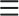

<ion-header *transloco="let t" style="background-color:white !important">
  <ion-toolbar style="background-color:white !important">
    <ion-buttons>
      <ion-grid>
        <ion-row>
          <ion-col style="text-align: left;">
            <ion-button routerLink="/settings">
              
            </ion-button>
          </ion-col>
          <ion-col style="text-align: center;" (click)="back()">
            <ion-button style="color: black;" class="Top-Bar" expand="full" color="Blue" size="large">
              All
            </ion-button>
          </ion-col>
          <ion-col style="text-align: center;" (click)="next()">
            <ion-button style="color: black;" class="Top-Bar" expand="full" color="Blue" size="large">
              Tags
            </ion-button>
          </ion-col>
          <ion-col style="text-align: right;">
            <ion-button routerLink="/settings">
              
            </ion-button>
          </ion-col>
        </ion-row>
      </ion-grid>
    </ion-buttons>
  </ion-toolbar>
</ion-header>

<ion-content>

  <ion-slides #slides [options]="slideOpts" autoplay="false" (ionSlidesDidLoad)="ionSlideLoad(slides)"
    (ionSlideDidChange)="ionSlideChange(slides)" pager>
    <ion-slide style="background:white">
      <ion-grid>
        <ion-row>
          <ion-col *ngFor="let proofWithRaw of proofsWithRaw$ | async"
            [routerLink]="['/proof', {hash: proofWithRaw.proof.hash}]" size="3" class="ion-no-padding">
            <ion-card>
              <ion-thumbnail>
                <ion-img [src]="'data:image/*;base64,' + proofWithRaw.rawBase64"></ion-img>
              </ion-thumbnail>
            </ion-card>
          </ion-col>
        </ion-row>
      </ion-grid>
    </ion-slide>
    <ion-slide style="background:white">
      <!-- <h1>Slide 2</h1> -->
      <ion-grid>
        <ion-col *ngFor="let proofWithRaw of proofsWithRaw$ | async"
          [routerLink]="['/proof', {hash: proofWithRaw.proof.hash}]" size="3" class="ion-no-padding">
          <div class="date-card-title"> <strong>All {{getDays( proofWithRaw.proof.timestamp)}}</strong> </div>
          <ion-card class="select-card">
            <ion-thumbnail class="select-thumbnail">
              <ion-img [src]="'data:image/*;base64,' + proofWithRaw.rawBase64"></ion-img>
            </ion-thumbnail>
          </ion-card>
        </ion-col>
      </ion-grid>
    </ion-slide>
  </ion-slides>
  <ion-fab horizontal="end" vertical="bottom" slot="fixed">
    <ion-fab-button (click)="capture()">
      <ion-icon name="camera"></ion-icon>
    </ion-fab-button>
  </ion-fab>
</ion-content>